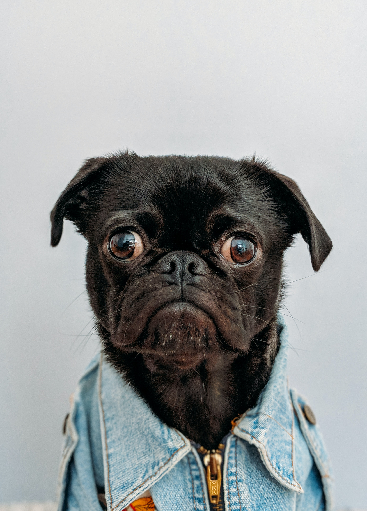

Parasocial Relationships: None of Us are Free of sin
A dive into the backlash celebrities can get from parasocial relationships using John Mulaney as a case study.

Togepicast Episode 1: Lil Nas X and the New Satanic Panic
A deep dive into how Lil Nas X uses curated outrage and social media to promote himself and his work.

Video Project
Watch the video of my roommate's cat just to feel something

Montgomery County Humane Society
The Montgomery County Humane Society's website. It has animals that are looking to be adopted and a donations link.